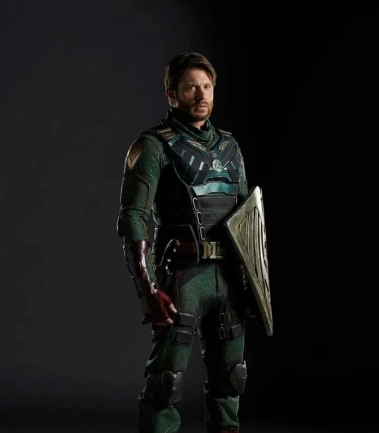

Solider Boy
Jensen Ackles como Soldier Boy (temporada 3), es el primer súper héroe conocido y líder de un equipo de elite conocido como "Payback". Durante la Guerra Fría, se le asignó a él y a su equipo la defensa del batallón de la coronel Mallory, pero resultaron ser muy inexpertos y acabaron generando una masacre por un ataque sorpresa. Supuestamente Soldier Boy murió en esta batalla, pero en realidad fue secuestrado por los rusos.